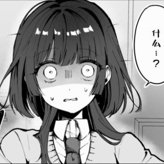

🌙艾丝尔娜·芙蕾琳🌙ᴹᴷ⁻ᴱᵐᵇᵉʳ
@AacerF59616
取决于ta们自己咋想的，因为跨女不是完全统一的整体，有想要当女孩子的、觉得无所谓所以继续使用男性身份生活的、不知道自己想作为什么性别生活的、在男/女之间当滑动变阻器的……所以说不能扁平化的去看待跨女这个群体。至于所谓“异性会不会认同跨女”，其实从头到尾都是建立在“跨女是男的”这个命题的基础上的，但我们从来没有证明过这个基础命题是成立的，把它当成可以不证自明的东西了。
我觉得是否认同跨性别其实需要看的是个人对跨性别的接受程度而不是ta到底是“同性”还是“异性”，因为支持Mtf的女权和顺直男ally都是确实存在的，如果说“男/女性不会认同跨性别”的话那不也是把这些人的性别同样否定了吗？

肽芙布冯v
@jrdh_jidu
@AacerF59616 所以跨性别是会走向第三性还是成功跨性呢？我遇到的一些跨都希望自己变成女孩而不是第三性，不过我其实觉得异性不会认同跨性吧所以最终只能选择第三性而不是宣称的希望性别